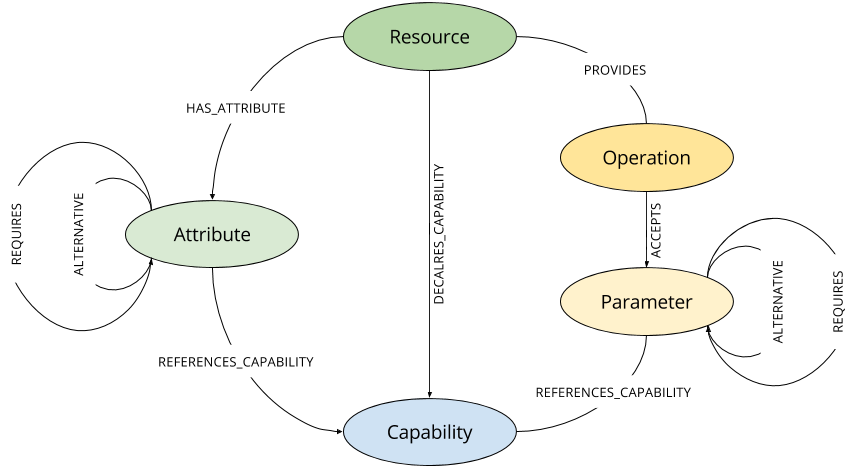

<article class="guide">
    <carousel class="deck container-fluid">
        <slide class="row-fluid">
            <div class="col-sm-4">
                <h3>WildFly Model Graph</h3>
                <p>A database which contains the resources, attributes, operations, request parameters and capabilities of the WildFly management model.</p>
                <p>The data is stored in a
                    <a href="https://neo4j.com/" target="_blank">Neo4j</a> database. You’re currently interacting with the Neo4j Browser, which provides a web interface to the database. This is a read-only instance, so you can’t modify the graph. However, you can run queries and and explore the management model. If you are new to Neo4j, check out the following guides:
                </p>
                <p><a play-topic="concepts">Concepts</a><br/>
                    <a play-topic="cypher">Cypher</a><br/>
                    <a play-topic="intro">Browser Intro</a></p>
                <p>Step through the next slides to learn more about the database and how to execute queries.</p>
            </div>
            <div class="col-sm-8">
                <p>Here's the graph which is used to store the management model tree</p>
                
            </div>
        </slide>
        <slide class="row-fluid">
            <div class="col-sm-3">
                <h3>Main Nodes</h3>
                <p class="lead">Second lead</p>
            </div>
            <div class="col-sm-9">
                <figure>
                    <pre class="pre-scrollable code runnable">CREATE INDEX ON :Product(productID)</pre>
                    <figcaption>Find the produce suppliers.</figcaption>
                </figure>
                <figure>
                    <pre class="pre-scrollable code runnable">CREATE INDEX ON :Category(categoryID)</pre>
                </figure>
                <figure>
                    <pre class="pre-scrollable code runnable">CREATE INDEX ON :Supplier(supplierID)</pre>
                </figure>
                <h3>More code</h3>
                <ul class="undecorated">
                    <li><a play-topic="movie-graph">Movie Graph</a> - actors &amp; movies</li>
                    <li><a play-topic="query-template">Query Templates</a> - common ad-hoc queries</li>
                    <li><a play-topic="cypher">Cypher</a> - query language fundamentals</li>
                </ul>
            </div>
        </slide>
    </carousel>
</article>